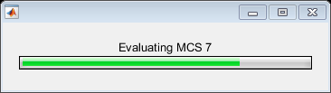

Contents
clear all;close all;clc;format compact;
warning('off','MATLAB:xlswrite:AddSheet');
warning('off','MATLAB:xlswrite:NoCOMServer');
warning('off','MATLAB:mir_warning_maybe_uninitialized_temporary');
Inputs
type = 'BCC';
Preset Generation
MCS_Vec = 0:9;
SNR_Vec = 0:20;
debug = -1;
if (debug == 0)
numIter = 1e3;
elseif (strcmp(type,'BCC'))
numIter = 1e3;
elseif (strcmp(type,'LDPC'))
numIter = 1e4;
end
Simulate for all MCS
R_Vec = zeros(3,length(SNR_Vec),length(MCS_Vec));
h = waitbar(0, 'Initializing data cannon...');
for MCS = MCS_Vec
switch MCS
case 0
display = 'BPSK Rate 1/2';
modType = 'PSK';
R = 1/2;
msgM = 2;
k = log2(msgM);
hMod = comm.BPSKModulator;
htDeMod = comm.BPSKDemodulator;
puncpat = -1;
lSpec = '*r-';
case 1
display = 'QPSK Rate 1/2';
modType = 'PSK';
R = 1/2;
msgM = 4;
k = log2(msgM);
hMod = comm.QPSKModulator('BitInput', true);
htDeMod = comm.QPSKDemodulator('BitOutput', true);
puncpat = -1;
lSpec = '*g-';
case 2
display = 'QPSK Rate 3/4';
modType = 'PSK';
R = 3/4;
msgM = 4;
k = log2(msgM);
hMod = comm.QPSKModulator('BitInput', true);
htDeMod = comm.QPSKDemodulator('BitOutput', true);
puncpat = [1; 1; 1; 0; 0; 1;];
lSpec = 'xg-';
case 3
display = '16-QAM Rate 1/2';
modType = 'QAM';
R = 1/2;
msgM = 16;
k = log2(msgM);
hMod = comm.RectangularQAMModulator('ModulationOrder', msgM, 'BitInput', true);
htDeMod = comm.RectangularQAMDemodulator('ModulationOrder', msgM, 'BitOutput', true);
puncpat = -1;
lSpec = '*c-';
case 4
display = '16-QAM Rate 3/4';
modType = 'QAM';
R = 3/4;
msgM = 16;
k = log2(msgM);
hMod = comm.RectangularQAMModulator('ModulationOrder', msgM, 'BitInput', true);
htDeMod = comm.RectangularQAMDemodulator('ModulationOrder', msgM, 'BitOutput', true);
puncpat = [1; 1; 1; 0; 0; 1;];
lSpec = 'xc-';
case 5
display = '64-QAM Rate 2/3';
modType = 'QAM';
R = 2/3;
msgM = 64;
k = log2(msgM);
hMod = comm.RectangularQAMModulator('ModulationOrder', msgM, 'BitInput', true);
htDeMod = comm.RectangularQAMDemodulator('ModulationOrder', msgM, 'BitOutput', true);
puncpat = [1; 1; 1; 0;];
lSpec = '+b-';
case 6
display = '64-QAM Rate 3/4';
modType = 'QAM';
R = 3/4;
msgM = 64;
k = log2(msgM);
hMod = comm.RectangularQAMModulator('ModulationOrder', msgM, 'BitInput', true);
htDeMod = comm.RectangularQAMDemodulator('ModulationOrder', msgM, 'BitOutput', true);
puncpat = [1; 1; 1; 0; 0; 1;];
lSpec = 'xb-';
case 7
display = '64-QAM Rate 5/6';
modType = 'QAM';
R = 5/6;
msgM = 64;
k = log2(msgM);
hMod = comm.RectangularQAMModulator('ModulationOrder', msgM, 'BitInput', true);
htDeMod = comm.RectangularQAMDemodulator('ModulationOrder', msgM, 'BitOutput', true);
puncpat = [1; 1; 1; 0; 0; 1; 1; 0; 0; 1;];
lSpec = '.b-';
case 8
display = '256-QAM Rate 3/4';
modType = 'QAM';
R = 3/4;
msgM = 256;
k = log2(msgM);
hMod = comm.RectangularQAMModulator('ModulationOrder', msgM, 'BitInput', true);
htDeMod = comm.RectangularQAMDemodulator('ModulationOrder', msgM, 'BitOutput', true);
puncpat = [1; 1; 1; 0; 0; 1;];
lSpec = 'xm-';
case 9
display = '256-QAM Rate 5/6';
modType = 'QAM';
R = 5/6;
msgM = 256;
k = log2(msgM);
hMod = comm.RectangularQAMModulator('ModulationOrder', msgM, 'BitInput', true);
htDeMod = comm.RectangularQAMDemodulator('ModulationOrder', msgM, 'BitOutput', true);
puncpat = [1; 1; 1; 0; 0; 1; 1; 0; 0; 1;];
lSpec = '.m-';
otherwise
warning('Unexpected MCS.')
end
if (debug == 0)
R = 1;
N_Pre_Pad = 0;
N_Data_Bits = 1e4;
N_Post_Pad = 0;
N_Data_Bits = N_Data_Bits + k - mod(N_Data_Bits,k);
htErrorCalc = comm.ErrorRate;
elseif (strcmp(type,'BCC'))
constlen=7;
codegen = [171 133];
trellis = poly2trellis(constlen, codegen);
htConvEnc = comm.ConvolutionalEncoder(trellis);
htVitDec = comm.ViterbiDecoder(trellis, 'InputFormat', 'Hard');
htVitDec.TracebackDepth = 96;
htErrorCalc = comm.ErrorRate('ReceiveDelay', htVitDec.TracebackDepth);
if (puncpat ~= -1)
htConvEnc.PuncturePatternSource = 'Property';
htVitDec.PuncturePatternSource = 'Property';
htConvEnc.PuncturePattern = puncpat;
htVitDec.PuncturePattern = puncpat;
end
length_param = 4095;
[numerator,denominator] = rat(R);
N_DBPS = k;
N_Scrambler_Init_Bits = 7;
N_Reserved_Service_Bits = 9;
N_Tail_bits = 6;
N_SYM = ceil((N_Scrambler_Init_Bits+N_Reserved_Service_Bits+...
8*length_param + N_Tail_bits)/lcm(N_DBPS,length(puncpat)))*numerator;
N_DATA = N_SYM * lcm(N_DBPS,length(puncpat));
N_PAD = N_DATA - (N_Scrambler_Init_Bits+N_Reserved_Service_Bits+...
8 * length_param + N_Tail_bits);
N_Pre_Pad = N_Scrambler_Init_Bits+N_Reserved_Service_Bits;
N_Post_Pad = N_Tail_bits+N_PAD;
N_Data_Bits = N_DATA-N_Pre_Pad-N_Post_Pad;
elseif (strcmp(type,'LDPC'))
H = LDPC(R);
htLDPCEnc = comm.LDPCEncoder(H);
htLDPCDec = comm.LDPCDecoder(H);
htErrorCalc = comm.ErrorRate;
if(~((msgM == 2) || (msgM == 4)))
hMod.NormalizationMethod = 'Average power';
hMod.AveragePower = 1;
end
code_block = 648 * R;
N_Pre_Pad = 0;
N_Data_Bits = code_block;
N_Post_Pad = 0;
end
BERVec = zeros(3,length(SNR_Vec));
env_c = length(SNR_Vec);
tic;
parfor n=1:env_c
hChan = comm.AWGNChannel('NoiseMethod','Signal to noise ratio (SNR)', 'SNR', SNR_Vec(n));
hErrorCalc =clone(htErrorCalc);
if (debug == 0)
hDeMod = clone(htDeMod);
elseif (strcmp(type,'BCC'))
hDeMod = clone(htDeMod);
hConvEnc = clone(htConvEnc);
hVitDec = clone(htVitDec);
elseif (strcmp(type,'LDPC'))
hDeMod = clone(htDeMod);
hDeMod.DecisionMethod = 'Approximate log-likelihood ratio';
hDeMod.Variance = 1/10^(hChan.SNR/10);
if(~((msgM == 2) || (msgM == 4)))
hDeMod.NormalizationMethod = 'Average power';
hDeMod.AveragePower = 1;
end
hLDPCEnc = clone(htLDPCEnc);
hLDPCDec = clone(htLDPCDec);
end
for i = 1:numIter
bits = [zeros(N_Pre_Pad,1);logical(randi([0 1], N_Data_Bits,1));zeros(N_Post_Pad,1)];
txdata = bits;
if (debug == 0)
encData = txdata;
elseif (strcmp(type,'BCC'))
encData = step(hConvEnc, txdata);
elseif (strcmp(type,'LDPC'))
encData = step(hLDPCEnc, txdata);
end
modData = step(hMod, encData);
if (strcmp(modType,'PSK'))
channelOutput = step(hChan, modData);
elseif (strcmp(type,'LDPC') && debug)
channelOutput = step(hChan, modData);
elseif (strcmp(modType,'QAM'))
channelOutput = awgn(modData, SNR_Vec(n), 'measured');
end
rxsyms = step(hDeMod, channelOutput);
if (debug == 0)
decData = rxsyms;
elseif (strcmp(type,'BCC'))
decData = step(hVitDec, rxsyms);
elseif (strcmp(type,'LDPC'))
decData = step(hLDPCDec, rxsyms);
end
data = decData;
BERVec(:,n) = step(hErrorCalc, bits, double(data));
end
end
toc;
if (debug == 0)
theo_disp = strsplit(display);
berHypo = berawgn(SNR_Vec - 10*log10(k*R), modType, msgM, 'nondiff');
semilogy(SNR_Vec,berHypo,'k', 'DisplayName', strcat('Theoretical ', char(theo_disp(1))));
hold on
end
R_Vec(:,:,MCS+1) = BERVec;
EbNo_Vec = SNR_Vec - 10*log10(k*R);
semilogy(SNR_Vec, BERVec(1,:), lSpec, 'DisplayName', display);
hold on
waitbar(MCS/MCS_Vec(length(MCS_Vec)),h,sprintf('Evaluating MCS %d',MCS));
end
close(h);
Graph Labeling
hold off
xlabel('SNR (dB)');
ylabel('Bit Error Rate (BER)');
if (debug ~= 0)
title(strcat('802.11ac', type));
else
title(strcat('802.11ac AWGN BER w/o FEC'));
axis([0 20 1e-7 1e0]);
end
if (debug ~= 0)
legend('BPSK Rate 1/2 (MCS 0)', ...
'QPSK Rate 1/2 (MCS 1)', 'QPSK Rate 3/4 (MCS 2)', ...
'16-QAM Rate 1/2 (MCS 3)', '16-QAM Rate 3/4 (MCS 4)', ...
'64-QAM Rate 2/3 (MCS 5)', '64-QAM Rate 3/4 (MCS 6)', '64-QAM Rate 5/6 (MCS 7)', ...
'256-QAM Rate 3/4 (MCS 8)', '256-QAM Rate 5/6 (MCS 9)');
else
end
Data Output
Sample BCC Output
Elapsed time is 402.094494 seconds.

Elapsed time is 359.850479 seconds.
Elapsed time is 1082.955355 seconds.
Elapsed time is 347.156270 seconds.
Elapsed time is 1008.327777 seconds.
Elapsed time is 670.677639 seconds.
Elapsed time is 981.606436 seconds.

Elapsed time is 1695.898423 seconds.

Elapsed time is 1028.833423 seconds.
Elapsed time is 1706.740979 seconds.